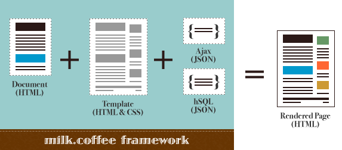
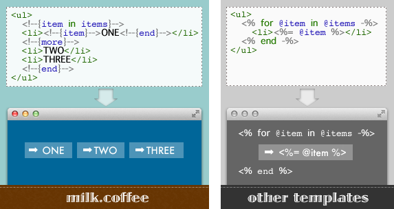
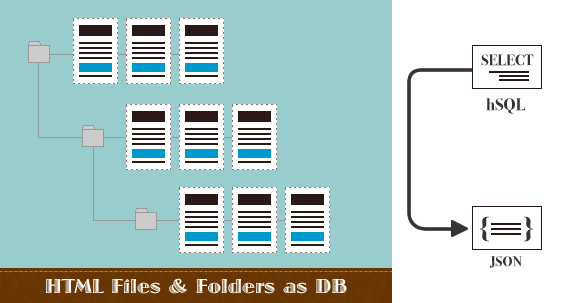

the client-side template framework for the rest of us
No more spaghetti HTML generators.
No more odd tags on preview.

milk.coffee はクライアントサイドで動作するテンプレートフレームワークです。
JavaScriptによって、ドキュメントとテンプレート、そしてAjaxなどで取得したデータを合わせ、一枚のページをレンダリングします。
サーバサイドの環境はなくてもOK。プログラムを気にせず、デザイナはHTMLに集中して作業できます。

モックアップの作成と、テンプレートの作成は別の話、と思っていませんか? 確かに多くのテンプレートエンジンではテンプレート≒HTMLですよね。WEBブラウザでテンプレートを表示すると、変な記号が表示されたり、複数並んでないとイメージが掴めないのに、1つしか表示されなかったり…。
milk.coffeeなら、テンプレート自体が完全なHTMLなので、ビジュアルエディタ(Dreamweaver等)での編集もOKです。

サーバ上のファイル検索は、JavaScriptからできないことの一つでした。milkはHTMLファイル検索に特化した、SQLライクなクエリ言語を提供します。
例えば、最新3件のページが必要なら...
SELECT * FROM ./ LIMIT3
のように指定するだけ。
※ hSQL (html Search Query Language)の利用には、サーバサイドのスクリプト環境(PHP)が必要です。